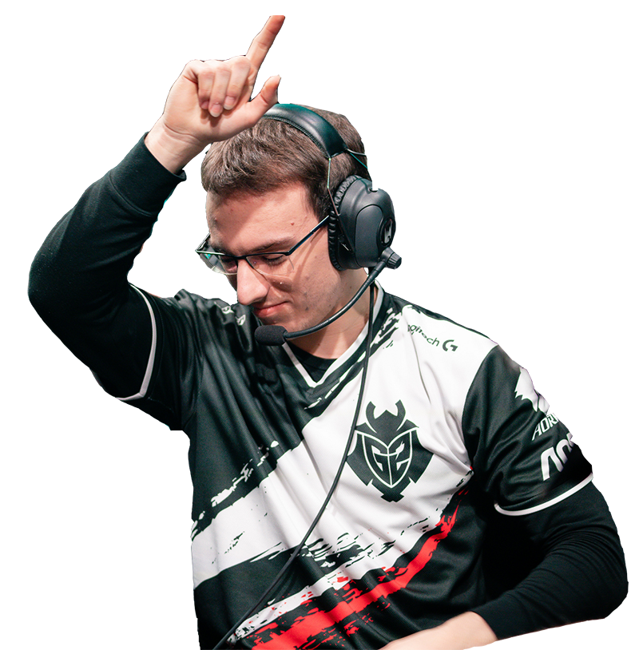

Luka "Perkz" Perković
- Role: ADC
- Uma Jan Activated
-
Personal Achievements:
- 2016 Spring EU LCS Rookie of the Split
- 2016 - 2019 1st/2nd All-Pro Teams
- 2017 IEM MVP
- 2018 World Championship Semifinalist
-
Previous Teams:
- GSI Gaming (Jun 2014 - Sep 2014)
- Gamers2 (Jan 2015 - May 2015)
- Millenium (Feb 2015 - May 2015)
- Gamers2 (Jun 2015 - Oct 2015)
- G2 Esports (Oct 2015 - Present)
- Social Media:
